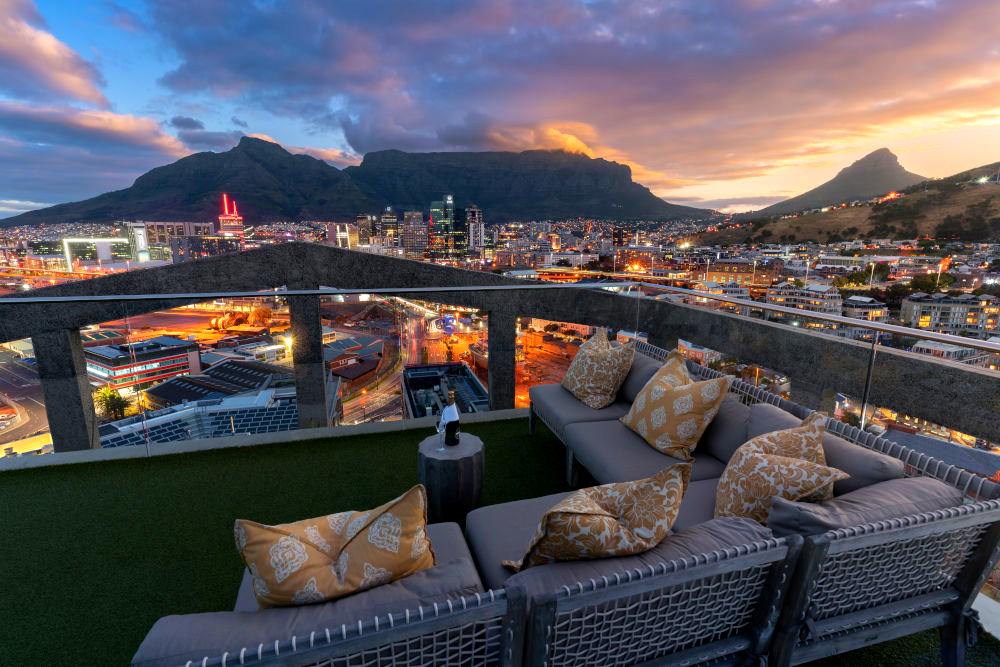
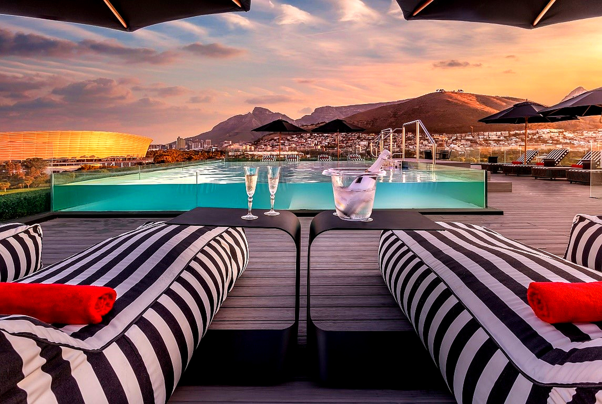
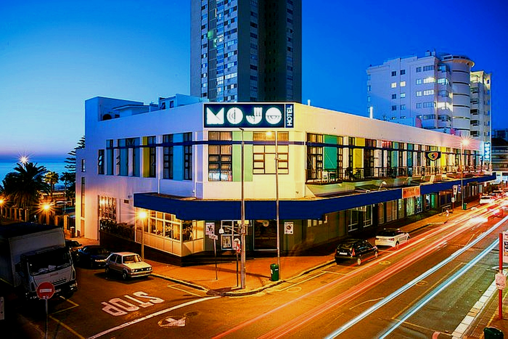

Cape Town is a city that defies simple description. It’s a vibrant collision of cultures, landscapes, and histories, all nestled dramatically between a world-famous mountain and two oceans. Whether you're an adrenaline junkie, a foodie, a history buff, or a nature lover, Cape Town delivers. This guide is designed to help you navigate its wonders and discover experiences that last a lifetime.
Where to Stay: Our Top-Rated Picks for 2025
Finding the right base is key to your Cape Town adventure. Here are our top picks—backed by stellar reviews—balancing location, value, and experience.
Top-Tier Luxury: The Silo Hotel
Built in the grain elevator portion of a historic silo complex above the Zeitz MOCAA museum, The Silo is an architectural masterpiece. With opulent rooms offering panoramic views through 5.5-meter-high pillowed-glass windows, a stunning rooftop pool, and unparalleled service, it's the city's most exclusive address for art lovers and luxury seekers.
Check Prices & AvailabilityBoutique Charm: O'Two Hotel
Located in Mouille Point, the O'Two Hotel offers a chic and modern boutique experience with incredible attention to detail. Guests consistently praise the exceptional staff, the beautiful rooftop pool with its breathtaking ocean views, and the stylishly appointed rooms. It's the perfect spot to feel pampered while being just a short walk from the V&A Waterfront and Sea Point promenade.
Check Prices & AvailabilityBest Value & Vibe: The Mojo Hotel
Situated in the heart of Sea Point and famous for its ground-floor Mojo Market, this hotel offers an unbeatable combination of location, vibe, and value. With accommodation ranging from compact dorm-style rooms to private apartments, it caters to every budget. It’s a lively, social base perfect for exploring the Sea Point promenade, popping downstairs for live music and food, and easily accessing the city's main attractions.
Check Prices & AvailabilityTop 5 Unforgettable Experiences
- Ascend Table Mountain: It's iconic for a reason. Take the cable car up for breathtaking 360-degree views, or for the more adventurous, hike one of the many trails like Platteklip Gorge. Go early in the morning to avoid the crowds and the "tablecloth" of clouds that often rolls in later.
- Explore Kirstenbosch National Botanical Garden: Even if you're not a plant enthusiast, the sheer beauty of these gardens on the eastern slopes of Table Mountain will astound you. Don't miss the "Boomslang" (Tree Snake) canopy walkway.
- Drive Chapman’s Peak: This is one of the most scenic coastal drives in the world. The winding road from Hout Bay to Noordhoek offers jaw-dropping views at every turn. Pull over at the designated picnic spots to soak it all in.
- Visit Robben Island: A deeply moving and essential experience. Take the ferry from the V&A Waterfront and join a tour led by a former political prisoner. It’s a powerful lesson in South Africa's history.
- Wander through Bo-Kaap: Get your camera ready for the brightly coloured houses and cobblestone streets of this historic neighbourhood. It's the heart of the Cape Malay culture, so be sure to try a traditional Cape Malay curry or a delicious koesister.
Essential Local Tips
Knowing these few things can make your trip much smoother and more enjoyable.
- Transport: While you can rent a car, e-hailing services like Uber are widely available, safe, and affordable for getting around the city.
- Safety: Like any major city, be aware of your surroundings. Avoid walking alone at night in quiet areas and don't leave valuables visible in your car.
- Tipping: A 10-15% tip is standard in restaurants for good service. It's also customary to tip petrol attendants and informal car guards a few rand.
- Loadshedding: South Africa experiences scheduled power cuts known as "loadshedding." Download the "EskomSePush" app to track the schedule. Most hotels and restaurants have generators, so it rarely impacts tourists heavily, but it's good to be aware.